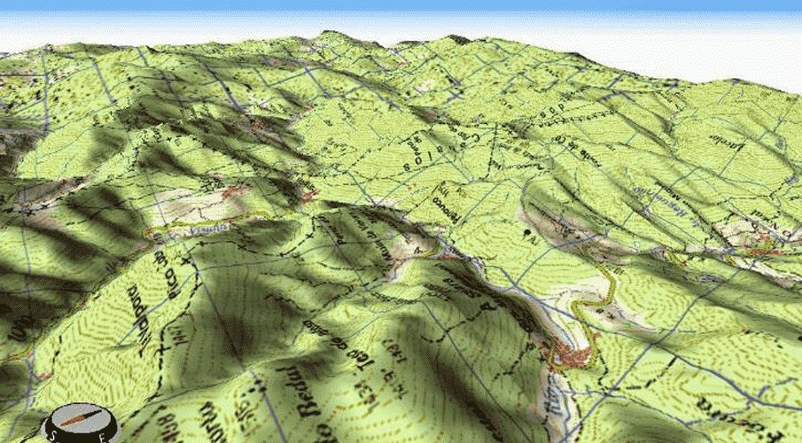

Una empresa de catastro en Badajoz
GEO INGENIERÍA trabaja sobre todo en catastro y en lo que sale de él: segregaciones, particiones, mediciones con dron y estudios de impacto ambiental. Nuestros técnicos llevan haciendo trabajos de catastro desde 1987.

Nuestro trabajo en el Catastro
Lo principal ha sido el Catastro de los municipios en todas sus fases, de la formación y la conservación a la renovación y la revisión, siempre con los organismos competentes.
Conocemos las bases catastrales por dentro, con sus tablas, sus cruces y su cartografía, la digital y la antigua en papel. De ese trabajo sale todo lo demás que hacemos, de una segregación a un estudio ambiental.
Equipos y programas
Dron DJI Mavic 3 con RTK
Para nivelaciones, curvas de nivel, modelos del terreno y ortofotos de detalle. Más en mediciones con dron.
Programa de teledetección
Una red neuronal que hemos entrenado nosotros. Hoy busca construcciones y piscinas, y lo que marca se comprueba antes de darlo por bueno. Más en teledetección con IA.
Programas propios de catastro
Para leer los ficheros del Catastro, cruzar el padrón con el Catastro, renombrar y comprimir las fotos de campo y preparar las imágenes de revisión.
Cómo trabajamos
Si un dato no se conoce, lo dejamos marcado como tal y lo decimos en la entrega.
Antes de tocar los datos de un municipio hacemos una prueba que no cambia nada. Si algo no cuadra, paramos y preguntamos, y no pisamos lo que alguien ya resolvió a mano. Lo que no se ha podido resolver va a una hoja de revisión con su motivo, y los plazos que damos incluyen el tiempo de esa revisión.
Qué prueba cada fuente
Cuando dos fuentes no coinciden, enseñamos la diferencia en vez de quedarnos con una.
| Fuente | Para qué sirve | Lo que no prueba |
|---|---|---|
| Sede Electrónica del Catastro | Referencias, superficies, construcciones y fichas | No prueba la titularidad ni los linderos con valor jurídico |
| Ortofoto | La imagen del terreno y la fecha del vuelo | No sustituye a una medición |
| Vuelo con dron | Detalle del terreno a la fecha del vuelo | No tiene valor oficial por sí solo |
| Nota simple | La descripción registral y las cargas | La superficie inscrita puede no ser la real |
| Visita a campo | El estado real de la finca | No resuelve una discrepancia entre documentos |
| Lo que nos cuenta el cliente | Lo que no está en los papeles | Lo anotamos como dicho por el cliente, sin darlo por comprobado |
Los datos de cada encargo
El material que nos dan para un trabajo solo se usa para ese trabajo. Por eso en esta web no verá nombres de particulares ni cifras de valoraciones, y los casos de teledetección son dibujos.
Dónde estamos
Nuestra oficina está en Badajoz. Llámenos o escríbanos con la referencia catastral, o con el municipio, y cuéntenos qué quiere hacer. Si no es un trabajo que podamos hacer bien, se lo decimos en la primera respuesta.
- emiliocontadorbrito@gmail.com
- Calle Matilde Tagle Ortiz, 28, 5.º D, 06006 Badajoz